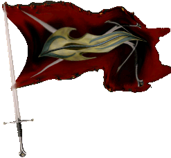
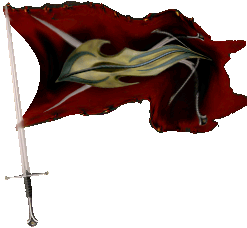

| Übersicht,
Anschläge und Stammtisch (RPG) |
|
Aufruf zur Standhaftigkeit (10  ) )
|
| Dr. Nightmare (RIP) |
Erhebt euch und horchet Esturier und Verbündete!
Ich weiß wie Ihr euch jetzt fühlt, am liebsten würdet Ihr euch jetzt von einem alten Barden den Verlauf und auch den Ausgang dieses Krieges erzählen lassen.
Doch wird euch der Barde nicht von machthungrigen Königen und dessen sabbernden Handlangern erzählen, sondern von mutigen Kriegern, wie Ihr welche seid.
Ihr seid keine Miliz die sich zur Verteidigung unseres Reiches meldete.
Nein!
Ihr seit wahre Helden und auf den heutigen Tag mit allen gleichgestellt.
Ich kann euch sogar das Ende der Geschichte des alten Barden sagen.
Die tapfersten Soldaten, die unser Reich je gesehen hat, standen auf einen kleinen Hügel und betrachteten die aufgehende Sonne, während sie die letzten Laoten niederschlugen.
Und glaubt mir jede Frau und jeder Mann der an dieser Schlacht beteiligt war, war so mutig wie ein Paladin der mit Licht erfüllt wurde. Jeder von Ihnen strahlte so sehr das selbst die Sieben erst kurz weg gucken mussten, um den hellen Lichtstrahl der von Ihnen ausging zu realisieren.
Das ist es was er unseren Kinder und deren Kinder erzählen wird.
Wir brauchen euren Mut im Kampf gegen das Böse, das unsere Familien bedroht.
Wir brauchen eure Unterstützung im Kampf gegen das Böse, das unsere Häuser niederbrennt.
Wir brauchen euch alle, jeden von euch.
Ihr wisst genauso gut wie ich das die Lage nicht gerade gut für uns aussieht.
Aber ihr wisst genauso gut wie ich, dass sie sich auch nicht verbessern wird.
Wenn ihr einfach nur herrum sitzt.
Es kommt nicht auf die Feinheit oder magischen Kraft der Waffe an, sondern auf den der sie führt. Mit reinem Herzen und den wahren Glauben, an eine Zukunft.
Und jetzt lasst uns um die göttliche Gunst bitten, dass auch unsere Angehörigen, Ländereien, Besitztümer, den Glauben und auch unserer Nationen, sowie unsere Anführer, schützen mag!!!
Nun meine Brüder und Schwestern,
jetzt lasst uns gemeinsam die Schwerter ziehen und dem entgegen sehen, was uns erwartet.
Für die Ehre,
für die Freiheit
und für den Frieden!
Sir Drax Senémis
Zur 4. Stunde am 21.Erntemond im Jahre 423 |
07.02.06 23:00
|
|
| Bélanor Zénith (RIP) |
*hebt das Schwert*
Auf in den KAMPF
Sir Tyxaro von Ingham,
Ehemann der reizenden Doireann Zénith
Zur 4. Stunde am 21.Erntemond im Jahre 423 |
07.02.06 23:01
|
|
| Levthan Araxes (RIP) |
Auf ihr Anhänger der Dämonen. Weiter!
Der erste hat sich ja schon gemeldet.
Weitere Sklavenhalter und Paktierer sind in der Lehenskette der Ritter zu finden.
Kämpft für die Herren der Paktierer.
Pfalzgraf Levthan,
Vorsteher von Anudôra,
Anführer der glorreichen Nation "CHROME",
Verlobter der reizenden Solara,
Kartograph
Zur 4. Stunde am 21.Erntemond im Jahre 423 |
07.02.06 23:02
|
|
| Cadwan Baran (RIP) |
FÜR ESTURIEN, FÜR FREIHEIT, FÜR UNS
Cadwan Baran,
Stellvertretender Anführer der Freischar
Zur 4. Stunde am 21.Erntemond im Jahre 423 |
07.02.06 23:04
|
|
Norina á Chîroqué
   |
Für die Freiheit !!!
Norina
Zur 4. Stunde am 21.Erntemond im Jahre 423 |
07.02.06 23:07
|
|
| Fenvarien Despirae (RIP) |
In den Staub
Fenvarien Silberpfeil
Zur 4. Stunde am 21.Erntemond im Jahre 423 |
07.02.06 23:07
|
|
| Asmodis (RIP) |
*steht grübelnd da*
Und wem wollt ihr eure Geschichten erzählen, wenn ihr alle tot seid? Verfasst lieber ein Buch, vielleicht befindet es ja der Lektor für sachlich oder wenigstens zweckdienlich? Vielleicht ist sogar ein Editor willens, eure Worte zu drucken?
Sterbt nicht alle, sondern besorgt euch einen Schreiberling, der eure grossen Taten auch der Nachwelt überliefern mag.
Fürst Tilokh Araxes,
Vorsteher von Zwillingsfels,
Anführer der glorreichen Nation "Buchbinderei Wanninger",
Buchbinder Wanninger,
Ehemann der reizenden Gwendolyn,
Kartograph
Zur 4. Stunde am 21.Erntemond im Jahre 423 |
07.02.06 23:09
|
|
| Cyrik (RIP) |
Worin besteht der Unterschied zwischen sabbernden Handlangern und mutigen Kriegern, ausser in der Flagge unter der sie kämpfen?
Adaman Marbrad
Zur 5. Stunde am 21.Erntemond im Jahre 423 |
07.02.06 23:13
|
|
| Mordow (RIP) |
Brüder und Schwestern, Freunde.
Ihr erfüllt mich mit Stolz und Freude.
Tapferkeit und wahre Freundschaften sind es, die diese Tage kennzeichnen.
Laßt uns nicht zurück schauen auf verlorene Schlachten. Laßt uns nach vorne schauen, denn einzelne Schlachten mögen wir verloren haben, viel jedoch haben wir gewonnen. Freundschaften, Mut und letztendlich Zuversicht - denn der Krieg hat gerade erst begonnen.
Laßt unsere Gegner sich suhlen in ihren Erfolgen - diese hatten sie zweifelsohne. Laßt sie sich beweihräuchern.
Verloren hat nicht, wer hinfällt - verloren hat der, der nicht mehr aufsteht.
... und der Krieg hat gerade erst begonnen ...
Fürst Mordow,
Vorsteher von Lager Süd,
Anführer der glorreichen Nation "Ritter Esturiens",
Verlobter der reizenden Zorra
Zur 16. Stunde am 21.Erntemond im Jahre 423 |
08.02.06 1:49
|
|
| Níniel Fael (RIP) |
*nach langem Zögern schreitet Níniel langsam, jedoch hoch erhobenen Hauptes, auf den Fürsten zu, dessen Garde rechts und links ein Spalier gebildet haben. Vor ihm stehend verneigt sie sich und spricht mit klarer Stimme.*
Ehrenwerter Fürst Mordow...
bescheiden unsere Kraft,
bescheiden unsere Güter,
bescheiden unsere Wünsche...
Ihr kennt mich nicht, jedoch
als stolze Lehin des ehrenwerten Xolgrim côn Honorlege ich Euch, in der Position als stellvertretende Nationsführerin der *Schatten des Phönix*, die Schwerter unserer Krieger zu Füssen, sowie die Mistgabeln unserer Bauern, die Stäbe unserer Magier...
Viel mehr vermag mein Volk Euch nicht zu geben, jedoch erhaltet ihr dies voller Vertrauen, Mut und Zuversicht...
Was auch immer uns die Zukunft zu bringen vermag ~ welchen Weg ihr beschreiten werdet ~ wir werden diesen Schritt bis zu letzt mit Euch gehen...
*langsam erhebt sie sich, sich zu rückwärts vom Fürsten zu entfernend*
Lady Níniel Fael,
Vorsteherin von Minas Anor,
Ehefrau des ehrenwerten Elendaé Fael,
stellvertretende Nationsführerin
Zur 19. Stunde am 21.Erntemond im Jahre 423 |
08.02.06 2:31
|
|
Zadar
  |
Mut ist oft Mangel an Einsicht, während Feigheit nicht selten auf guten Informationen beruht.
Graf Zadar,
Vorsteher von Küstenfestung Girangoth,
Moladh do Taoch Istigh
Zur 19. Stunde am 21.Erntemond im Jahre 423 |
08.02.06 2:38
|
|
| Cwlvyn ab Dhwron (RIP) |
Für die Freiheit!
Sir Amorous Meara
Zur 20. Stunde am 21.Erntemond im Jahre 423 |
08.02.06 2:50
|
|
| Iczillion von Orcania (RIP) |
Ja, die Freiheit jeden zu plündern, wie du gerade lustig bist. Das war mal wieder ein Schuss in deinen eigenen Schiffbug...
*Der Elf steht auf und verdünnisiert sich, bevor Meara ihn erblicken kann*
Sir Iczillion
Zur 16. Stunde am 22.Erntemond im Jahre 423 |
08.02.06 7:36
|
|
| Aleya Sophija (RIP) |
Wir sind aufgestanden !
Aufgestanden mit Hilfe vieler vieler Freunde, die uns aufhalfen !!!
Danke
Für die Freiheit !
Freifrau Aleya Sophija,
Ehefrau des ehrenwerten Ramox,
Hexe von Esturien
Zur 17. Stunde am 22.Erntemond im Jahre 423 |
08.02.06 7:45
|
|
| Florinus Silberpfeil (RIP) |
Könnten bitte mal beide Seiten das mit den Paktierern weglassen, ich denke es sind auf beiden Seiten welche vorhanden, wo jetzt mehr oder weniger stehen, keine Ahnung.
Aber ist das wirklich notwendig? Bezieht Euch lieber auf das notwendige. Das hört sich langsam an wie an Waschweibergewäsch "du hast meine Seife gestohlen" *in den Boden stampft und sich auf den Heimweg begibt"
Markgraf Florinus Silberpfeil,
Vorsteher von Quell der Hoffnung,
Atheistischer Freiheitskämpfer
Zur 20. Stunde am 22.Erntemond im Jahre 423 |
08.02.06 8:23
|
|
| Florinus Silberpfeil (RIP) |
Gratulieren möchte ich aber auch noch zum 1. Erfolg.
Markgraf Florinus Silberpfeil,
Vorsteher von Quell der Hoffnung,
Atheistischer Freiheitskämpfer
Zur 20. Stunde am 22.Erntemond im Jahre 423 |
08.02.06 8:27
|
|
| Jesta (RIP) |
Da !!! Der erste Paktierer hat sich gleich mal wieder selbst verraten...*auf Levthan zeigt*
Jesta,
Kardinal im Dienste des einzig wahren Glaubens an Pheron
Zur 15. Stunde am 23.Erntemond im Jahre 423 |
08.02.06 12:50
|
|
| Doc Eku (RIP) |
Das ist wahrhaft pathetisch, schnüff.
Für die Freiheit! Für den Frieden! Und gegen die Feinde, hehe.
Doc Eku,
Kardinal im Dienste des einzig wahren Glaubens an Urvan
Zur 19. Stunde am 23.Erntemond im Jahre 423 |
08.02.06 13:49
|
|
| Berid (RIP) |
große Reden können sie schwingen *grinst*
Aber in nem anderen Anschlag gaben sie wenigstens schonmal zu, das sobald Wiederstand auftaucht, der Rückzug angetreten wird.
Berid Horlus,
Witwer der reizenden Sharain Horlus,
Atheistischer Freiheitskämpfer
Zur 20. Stunde am 23.Erntemond im Jahre 423 |
08.02.06 14:10
|
|
| Malachias (RIP) |
Der Drax sollte Propaganda minster der RE werden.
Na schauen wir mal wie es weitergeht, noch sind nicht ale Laoch und Chrome ins Kriegsgeschehen eingetreten, doch wenns zu eng wird, denke ich kommen weitere und werden mithelfen.
Paktiker bei uns!!
Niemals lasst solche Gerüchte sein!
Wir sind Urvaner und Pheronies!
Zeuss
Zur 24. Stunde am 23.Erntemond im Jahre 423 |
08.02.06 15:02
|
|
| Malachias (RIP) |
PS.
Und ich dachte die RE und rest ist mit der Verteidigung des Landes beschäftigt und machen hier Propaganda damit andere kommen und helfen, nur als ich mich gerade mit den Geschichtswichteln unterhielt, sagten die mir etwas was ich nciht recht verstand.
8.02.06 15:04 Sieg Drax Senémis hat den/die/das 10. Ramsporn besiegt!
Naja einige EBschäftigen sich auch mit anderen Sachen ausser Verteidigung des Landes, oder ersucht Ihr um Hilfe um selber nichts machen zu müssen
Zeuss
Zur 1. Stunde am 24.Erntemond im Jahre 423 |
08.02.06 15:07
|
|
| Dr. Nightmare (RIP) |
Nun unwerter Zeuss, Ihr mögt es nicht glauben doch besteht unser Leben nicht nur aus diesem Krieg, so wie es bei euch wohl der Fall ist.
Es gibt immer mal wieder freiräume die sinnvoll genutzt werden können.
Grüße,
Sir Drax Senémis
Zur 1. Stunde am 24.Erntemond im Jahre 423 |
08.02.06 15:20
|
|
| Bill Einauge (RIP) |
und es ward geschrieben*DAS BUCH *
Aprophis
Zur 2. Stunde am 24.Erntemond im Jahre 423 |
08.02.06 15:26
|
|
| Florinus Silberpfeil (RIP) |
werter Zeuss, sehe ist aus wie ein Waschweib was Gerüchte verbreitet?
Naja wenn in Euren Reihen nur rechtschaffende gläubige sind werde ich mir für Euch eine Schürze umbinden und beginnen Kekse zu backen.
Vielleicht gelingt mir ja ein Wahrheitskeks.
*sich in seine Universität begibt*
Markgraf Florinus Silberpfeil,
Vorsteher von Quell der Hoffnung,
Atheistischer Freiheitskämpfer
Zur 3. Stunde am 24.Erntemond im Jahre 423 |
08.02.06 15:44
|
|
| Dr. Nightmare (RIP) |
Lasst doch den vermeindlich "glorreichen" Levthan von den vielen Paktierern reden die er scheinbar kennt. Er kennt sich in dieser Richtung scheinbar gut aus.... und in anderen Dingen ist er zu unterbemittelt um mitreden zu können.
So bleibt Ihm immer und immer wieder nur dieses eine Thema in dem er erst einmal all seine Feinde zu Paktierern erklärt.
Ich selbst sehe es als Blasphemie, hält er sich oder Falster gar selbst für einen Gott?
Ist dem der Fall bekenne ich selbst mich zu einem Paktierer gegen Laoch und ihrem "Gott" Falster von Distelflamme.
Sir Drax Senémis
Zur 4. Stunde am 24.Erntemond im Jahre 423 |
08.02.06 15:52
|
|
| Leta (RIP) |
Werter Zeuss,
es mag sein das nicht ein jeder unserer Feinde seine Kampftruppe mobilisiert hat. Doch der König höchst selbst hat bereits eingegriffen. Und damit ein König einen Finger rührt, muss schon einiges Geschehen. Vielleicht lag es aber auch einfach nur an der schläfrigkeit Eurer Mannen, das er eingreifen musste.
Hochachtungsvoll,
Lady Eborp Lehcieps,
Anführerin der glorreichen Nation "Freischärler"
Zur 7. Stunde am 24.Erntemond im Jahre 423 |
08.02.06 16:36
|
|
| Elraldur (RIP) |
Auf in den Kampf!!!
Elraldur,
Kardinal im Dienste des einzig wahren Glaubens an Urvan,
Legionär Urvans,
Verlobter der reizenden Jana Silverstorm
Zur 11. Stunde am 25.Erntemond im Jahre 423 |
08.02.06 23:05
|
|
| Mawitti de Leik (RIP) |
Zadar: "Mut ist oft Mangel an Einsicht, während Feigheit nicht selten auf guten Informationen beruht."
Oh werter Zadar, lässt das auch einen Umkehrschluss zu? Soweit mir bekannt ist, sind die Laoch d´Orchadas meist recht gut informiert.
Lady Mawitti de Leik,
Hohepriesterin im Dienste des einzig wahren Glaubens an Urvan
Zur 19. Stunde am 25.Erntemond im Jahre 423 |
09.02.06 0:58
|
|
| Dr. Nightmare (RIP) |
*applaudiert ob der Worte Mawitti de Leiks*
Ich wusste doch immer das die Laoten ein feiges Pack sind.
Sir Drax Senémis
Zur 24. Stunde am 25.Erntemond im Jahre 423 |
09.02.06 2:17
|
|
Zadar
|
Natürlich Lady Mawitti de Leik, ein guter Krieger weiss nicht nur wann eine Schlacht gewonnen ist sondern auch wann es Zeit ist den Rückzug anzutreten.
Pfalzgraf Zadar,
Vorsteher von Küstenfestung Girangoth,
Moladh do Taoch Istigh
Zur 8. Stunde am 26.Erntemond im Jahre 423 |
09.02.06 4:10
|
|
| nikon (RIP) |
Und warum wandelt ihr mit eurem Pack immer noch auf Esturischen Gebieten?
Flitze,
Ehemann der reizenden asuka
Zur 6. Stunde am 27.Erntemond im Jahre 423 |
09.02.06 9:12
|
|
| Malachias (RIP) |
Genau deshalb weil Wir wissen das wir bald gewinnen werden ;-)
Desweiteren ergötzen wir uns an deisem Anblick, wie hiess er grübel...
Asche zu Asche Staub zu Staub ;-)
Zeuss
Zur 14. Stunde am 27.Erntemond im Jahre 423 |
09.02.06 11:04
|
|
| Bélanor Zénith (RIP) |
*schaut in seine Hose*
Jeahhhhh steht noch immer
Sir Tyxaro von Ingham,
Ehemann der reizenden Doireann Zénith
Zur 15. Stunde am 27.Erntemond im Jahre 423 |
09.02.06 11:17
|
|
| Donnermaus (RIP) |
hauptsache gegen die laoten ^^
Donnermaus
Zur 16. Stunde am 27.Erntemond im Jahre 423 |
09.02.06 11:32
|
|
| Alina Aldarion (RIP) |
*tritt nach langem auch einmal an das Anschlagbrett...sich wundert über das Zitat von Zeuss und ein weiteres anheftet*
Jeder Krieg ist eine Niederlage des Geistes und des Verstandes.
*sich wieder abwendet und geht*
Lady Alina Aldarion,
Ehefrau des ehrenwerten Darc côn Hônor
Zur 20. Stunde am 27.Erntemond im Jahre 423 |
09.02.06 12:35
|
|
| Xyron von Ingham (RIP) |
*schmunzelt über Lady Alina Aldarion Worte*
Naja... Ich finde Krieg ist... irgendwie..... schön.... *runzelt die Stirn, packt seine Waffen ein und begibt sich wieder auf die Jagd nach Feinden*
Xyron von Ingham,
Schlächter der Scherbe,
Scharfrichter des Hains
Zur 21. Stunde am 27.Erntemond im Jahre 423 |
09.02.06 12:42
|
|
| Noemi Duval (RIP) |
Genau deshalb weil Wir wissen das wir bald gewinnen werden ;-)
*hustet kurz* hochmut kommt vor dem fall ...
Markgräfin Noemi Duval,
Ehefrau des ehrenwerten seth béliar,
Kartograph
Zur 1. Stunde am 30.Erntemond im Jahre 423 |
10.02.06 0:54
|
|
Alessa Imret Eilistraee
 |
Irgendwie erinnert mich diese ganze Farce an die Geschichte von dem Wolf und den drei kleinen Schweinchen...
"und der Wolf pustete und pustete"
*kichert*
Ich werde mir noch nicht ganz einig wer der Wolf und wer die Schweinchen sind... aber ich denke die werten Herrn Betroffenen auch nicht wirklich...
Lady Alessa Imret Eilistraee,
Die nackte Yakuza,
Ehefrau des ehrenwerten Takehiko
Zur 10. Stunde am 32.Erntemond im Jahre 423 |
10.02.06 14:15
|
|
| Tiramon côn Hônor v. Tacheless (RIP) |
*tritt ans anschlagsbrett und heftet nach kurzem zögern eine nachricht an*
Einst vereint mit den Laoch und derren Bündniss...
lange zeit stand mein sein voll und ganz hinter diesem...
doch dem ist nicht mehr...
Wie sagte ich einst...
ich mag einen fels in der brandung...
doch der fels in der brandung ist nur noch ein fels der über wehrlose dörfer rollt..
Ob man ihn stoppen kann...wer weiß das schon...
eher schlecht die Chancen...
doch tatenlos zu sehn die hände einfach in den Schoß legen...
nein das kann ich nicht
Vielleicht werden wir alle sterben doch dann wenigstens für die Freiheit
Man kann uns das Leben nehmen doch unseren Geist nicht
Auf den Widerstand !
Möge er ewig dauern !
Mögen wir sie sogar vielleicht besiegen!
Doch auch wenn wir besiegt werden sollten die freiheit unseres geistes ist uns immer sicher...
doch sie ohne uns als feinde sind nichts...
Ich hoffe das meine Familie diesen Schritt akzeptiert...
ich werd kein Blut meiner eigenen Familie vergiesen und hoffe diese tut dies auch nicht bei mir...
Für die Rebellen des Geistes...
für die Opposition...
Für Re und die gemeinschaft des wiederstandes !!!
*wendet sich danach ab und zieht im schlacht gewandt ab*
Tiramon côn Hônor v. Tacheless
Zur 22. Stunde am 33.Erntemond im Jahre 423 |
10.02.06 22:37
|
|
| Celebrimbor (RIP) |
*zieht sein schwert und brüllt*
Für die Ritter Esturiens!
Sir Celebrimbor de Corazon,
Verlobter der reizenden Greebo von Lansk
Zur 20. Stunde am 35.Erntemond im Jahre 423 |
11.02.06 9:19
|
|
| Malachias (RIP) |
haha also wenn ich richtig sehe seid ihr magier und kein krieger und ihr müsst doch zugeben ds ihr einen stab in der hand haltet und kein schwert! oder?
nunja wenn ihr etwas hilfe braucht beim kämpfen oder waffenunterscheiden dann meldet euch bei mir unwerter Celebrimbor de Corazon!
Malachias,
Hohepriester im Dienste des einzig wahren Glaubens an Pheron
Zur 23. Stunde am 35.Erntemond im Jahre 423 |
11.02.06 10:03
|
|
| Farodin (RIP) |
*mir etwas gebratenen Mais zurecht mach und mich auf einem Hügel niederlass um das Schauspiel zu betrachten* Ob man sich schon die Rechte an den laufenden Bildern gesichert hat??? *grübelt*
Shakaar
Zur 3. Stunde am 36.Erntemond im Jahre 423 |
11.02.06 10:59
|
|
Tar Aldarion
  |
Nun Malachias, ich denke Auch ein Magier kann sein Schwert ziehen, wenn er im Schweertkampf ausgebildet sein sollte oder wenn es auch nur Symbolisch ist.
Denn mal ehrlich: einen Stab zu ziehen und ihn in die Luft zu recken ist doch etwas komisch oder? Da kommt ein Schwert doch viel besser rüber.
Tar Aldarion,
Vorsteher von Asgards Ocarnje,
Priester im Dienste des einzig wahren Glaubens an Urvan
Zur 8. Stunde am 36.Erntemond im Jahre 423 |
11.02.06 12:08
|
|
| Celebrimbor (RIP) |
Wenn man keine Ahnung hat Malachias... nech?
Auch ein Magier kann ein Schwert führen - ist es doch tödlicher im Nahkampf als jeder Stab.
Sir Celebrimbor de Corazon,
Verlobter der reizenden Greebo von Lansk
Zur 2. Stunde am 37.Erntemond im Jahre 423 |
11.02.06 16:15
|
|
Übersicht,
Anschläge und Stammtisch (RPG)
|